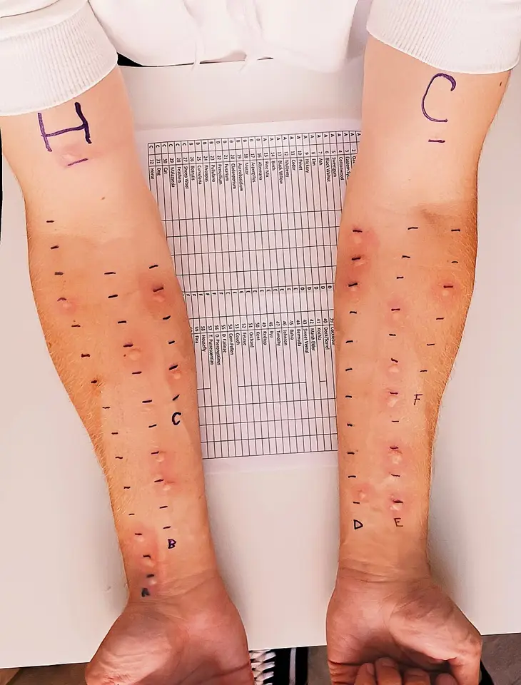

Écoulement nasal — S1.14
DX.2 — Rhinite allergique
Situation clinique de départ : écoulement nasal ; ce diagnostic appartient à la Phase A.
La rhinite allergique associe éternuements, prurit, rhinorrhée claire et obstruction après exposition à un allergène, et elle touche une large part de la population suisseS1. Le médecin exclut d’abord une atteinte unilatérale ou un asthme, puis il pose le diagnostic sur l’histoire, car les tests ne servent qu’en cas de doute ou d’immunothérapieS1. Il traite ensuite par corticoïde intranasal, seul ou associé à un antihistaminique nasal, en suivant les doses de l’AIPS (information professionnelle suisse) de chaque spécialitéS1S2AIPS 54189.
Ce cours sur la rhinite allergique repose uniquement sur les sources citées, et aucun médecin ne l’a encore validé cliniquement.
1. Définition
Les HUG (Hôpitaux universitaires de Genève) définissent en 2023 la rhinite allergique comme une maladie symptomatique du nezS1. Cette maladie naît d’une inflammation médiée par les IgE (immunoglobulines E), lorsque les membranes nasales sont exposées à un allergèneS1.
2. Épidémiologie (Suisse, puis Europe)
En Suisse, la rhinite allergique concerne jusqu’à 2 millions de personnes, ce qui en fait la deuxième cause d’écoulement nasal du lotS1. Elle persiste souvent jusqu’à un âge avancé, et elle peut même débuter chez la personne âgéeS1. Le patient allergique court 8 fois plus de risque de développer un asthme, car les deux maladies touchent la même muqueuse respiratoireS1. La fenêtre chiffres utiles rassemble ces données avec leur population et leur source.
Chiffres utiles de la rhinite allergique
| Chiffre | Population | Année | Source |
|---|---|---|---|
| Jusqu’à 2 millions de personnes atteintes | Suisse | 2023 | S1 |
| Plus de 500 000 personnes asthmatiques | Suisse | 2023 | S1 |
| Risque d’asthme multiplié par 8 | Patients avec rhinite allergique | 2023 | S1 |
| Asthme chez jusqu’à 1/3 des patients | Rhinite allergique connue | 2023 | S1 |
| Rhinite chez 75 à 80 % des patients | Asthme connu | 2023 | S1 |
| Valeur prédictive positive de l’anamnèse : 77 % | Allergie persistante | 2023 | S1 |
| Valeur prédictive positive de l’anamnèse : 82 à 85 % | Allergie intermittente saisonnière | 2023 | S1 |
| Épistaxis sous corticoïde nasal : 4 à 8 % | Patients traités | 2023 | S1 |
| Concordance des IgE in vitro et du prick-test : 85 à 95 % | Selon l’allergène testé | 2013 | S3 |
Les pollens d’arbres, de graminées et d’herbacées déclenchent la forme saisonnière, car le vent les transporte sur de longues distancesS1. Les acariens et les animaux domestiques forment ensuite les deux autres causes les plus fréquentesS1. Avec le réchauffement climatique, le pollen du noisetier apparaît désormais de novembre à décembre, ce qui prolonge la saison du patient polysensibiliséS1. La fenêtre allergènes suisses décrit chaque source, sa période et sa mesure d’éviction.
Allergènes responsables en Suisse
| Allergène | Où et quand | Indice d’anamnèse | Mesure | Source |
|---|---|---|---|---|
| Pollens d’arbres, de graminées, d’herbacées | Air extérieur, selon le calendrier pollinique de MétéoSuisse | Symptômes saisonniers, pires dehors | Rinçage des yeux et du nez au retour ; bulletin pollinique | S1 |
| Noisetier | Désormais aussi de novembre à décembre | Rhinite hivernale chez le polysensibilisé | Consultation du bulletin pollinique | S1 |
| Acariens de la poussière | Habitation, surtout le matelas | Symptômes au lever, toute l’année | Housses de matelas spécifiques | S1 |
| Chat, chien, cheval, rongeurs | Pellicules, salive, poils, urine, larmes | Symptômes au contact ou au domicile | Chambre interdite à l’animal ; aspirateur à filtre HEPA (haute efficacité pour les particules) | S1 |
| Moisissures extérieures (Alternaria, Cladosporium) | Végétation | Symptômes respiratoires parfois sévères | Limiter l’exposition | S1 |
| Moisissures intérieures (Aspergillus, Penicillium) | Lieux humides, climatisation mal entretenue | Logement humide | Assainir l’humidité | S1 |
| Allergènes professionnels | Lieu de travail | Amélioration en vacances | Bilan spécialisé | S1 |
La rhinite allergique pèse lourdement, car elle altère le sommeil, les performances scolaires ou professionnelles et la qualité de vieS1.
3. Physiopathologie
L’allergène inhalé active, par les IgE fixées, les mastocytes et les basophiles, qui libèrent histamine, leucotriènes, prostaglandines et kininesS1. Cette réaction d’hypersensibilité immédiate provoque ainsi le prurit, les éternuements et la congestion nasale en quelques minutesS1. Une libération secondaire de médiateurs entretient ensuite une réaction tardive, ce qui prolonge les symptômes après l’expositionS1. La fenêtre base à connaître montre la muqueuse atteinte sur une illustration annotée.
Base à connaître : la muqueuse nasale allergique
Muqueuse nasale enflammée par l’allergie : Blausen Medical a dessiné cette coupe sagittale en couleurs, publiée sous licence CC BY 3.0S5.

- La muqueuse des cornets, teintée de rouge vif, figure l’œdème inflammatoire qui obstrue la fosse nasale.
- Les fibres jaunes du toit nasal figurent les nerfs olfactifs, situés juste au-dessus de la muqueuse enflammée des cornets.
- La goutte jaune à la narine montre la rhinorrhée antérieure, qui reste claire dans l’allergie non surinfectée.
- Le rhinopharynx rouge explique l’écoulement postérieur, que le patient décrit comme un besoin de se racler la gorge.
- Le piège consiste à lire une rougeur unilatérale comme allergique, alors qu’une atteinte d’un seul côté impose un bilan spécialisé.
Une sensibilisation ne signifie pas une allergie, car une personne peut porter des IgE spécifiques sans aucun symptôme lors de l’expositionS1. Le diagnostic exige donc une sensibilisation démontrée et une histoire clinique compatible avec l’allergène retrouvéS1. Dans la rhinite allergique locale, la muqueuse nasale produit seule ses IgE spécifiques, si bien que les tests cutanés et sanguins restent négatifsS1. La fenêtre corrélation mécanisme–examen–traitement relie chaque perturbation au geste qui la montre et au médicament qui la corrige.
Corrélation : mécanisme, signe, examen et traitement
| Perturbation | Signe clinique | Examen qui la montre | Traitement qui la corrige | Source |
|---|---|---|---|---|
| IgE spécifiques fixées sur les mastocytes | Symptômes à l’exposition | Prick-test ou IgE sériques spécifiques | Immunothérapie spécifique | S1 |
| Libération d’histamine | Prurit, éternuements, rhinorrhée | Papule et érythème du prick-test | Antihistaminique oral ou nasal | S1S3 |
| Œdème de la phase tardive | Obstruction nasale | Rhinoscopie antérieure des cornets | Corticoïde intranasal | S1 |
| Leucotriènes des mastocytes | Symptômes nasaux persistants | Aucun examen de routine | Montélukast, surtout si asthme associé | S1 |
| Même inflammation bronchique | Toux, sifflements, dyspnée | Spirométrie | Traitement de l’asthme | S1 |
| IgE produites dans le nez seul | Tableau allergique, tests négatifs | Provocation nasale (recherche) | Traitement symptomatique | S1 |
4. Démarche diagnostique
Le médecin écarte d’abord les causes graves, car des symptômes unilatéraux ou mal contrôlés imposent un bilan ORL (oto-rhino-laryngologique) à la recherche de polypes ou d’anomalies structurellesS1. Il recherche ensuite un asthme associé, puisque la spirométrie confirme le diagnostic en cas de suspicion cliniqueS1. Il distingue enfin la rhinite allergique des nombreuses rhinites non allergiques, dont la liste des HUG compte plus de dix formesS1. La fenêtre diagnostics à distinguer donne pour chacun l’élément qui tranche et la conduite.
Diagnostics à distinguer de la rhinite allergique
| Diagnostic | Élément qui tranche | Piège | Conduite | Source |
|---|---|---|---|---|
| 🚩 Tumeur nasosinusienne (DX.10) | Symptômes unilatéraux persistants | Mettre l’obstruction d’un côté sur le compte de l’allergie | Bilan ORL sans délai | S1S7 |
| 🚩 Fuite de liquide cérébrospinal (DX.9) | Écoulement clair unilatéral | Prescrire un spray sans examen | Voir le DX.9 | S7 |
| Rhinosinusite infectieuse (DX.4, DX.5) | Début brutal après un rhume, douleur faciale | Confondre mucus coloré et allergie | Traiter selon la Phase A | S1S7 |
| Rhinite médicamenteuse | Sprays décongestionnants, bêtabloquants, IEC (inhibiteurs de l’enzyme de conversion), AINS (anti-inflammatoires non stéroïdiens) | Oublier l’automédication | Arrêt du médicament en cause | S1 |
| Rhinite hormonale | Grossesse ou hypothyroïdie | Lancer des tests allergiques inutiles | Traiter la cause | S1 |
| Rhinite non allergique (DX.3) | Déclencheurs irritants ou thermiques, tests négatifs | Prendre une sensibilisation fortuite pour la cause | Voir le DX.3 | S1 |
| Polypose nasosinusienne (DX.7) | Obstruction et perte de l’odorat | Associer polypes et asthme à l’allergie seule | Endoscopie nasale | S1S7 |
| Rhinite allergique locale | Histoire typique, tests négatifs | Conclure à une rhinite idiopathique | Avis allergologique | S1 |
Si l’anamnèse est claire et qu’aucune désensibilisation n’est envisagée, aucun examen complémentaire n’est nécessaire selon les HUGS1. La fenêtre démarche pas à pas décrit les quatre étapes, de l’exclusion des graves au choix du traitement.
Démarche pas à pas
| Étape | Question | Outil | Si oui | Source |
|---|---|---|---|---|
| 1 | Le symptôme est-il unilatéral ou rebelle ? | Anamnèse, rhinoscopie | Bilan ORL avant tout traitement d’épreuve | S1 |
| 2 | Existe-t-il toux, sifflements ou dyspnée ? | Auscultation, débit de pointe | Spirométrie | S1 |
| 3 | L’histoire est-elle typique et le traitement simple ? | Anamnèse ciblée, échelle visuelle analogique | Traitement sans test | S1 |
| 4 | Une immunothérapie est-elle envisagée ou le doute persiste-t-il ? | Avis allergologique | Prick-test ou IgE spécifiques | S1 |
5. Anamnèse ciblée et drapeaux rouges
L’entretien recherche les symptômes typiques : éternuements, rhinorrhée, congestion, prurit nasal, oculaire ou du palais, écoulement postérieur, toux et fatigueS1. Il précise l’âge de début, l’intensité sur une échelle visuelle analogique, la durée et le caractère saisonnier, car ces éléments classent la maladieS1. La fenêtre questions et leur raison explique ce que chaque réponse change à la décision.
Questions ciblées et leur raison
| Question | Raison physiopathologique ou décisionnelle | Source |
|---|---|---|
| Quels symptômes : éternuements, prurit, rhinorrhée, obstruction ? | Le prurit et les éternuements traduisent la libération d’histamine. | S1 |
| Depuis quel âge et à quelle saison ? | La saison oriente vers un pollen ; l’allergie peut débuter tard. | S1 |
| Combien de jours par semaine et de semaines par an ? | Le seuil de 4 jours et de 4 semaines sépare l’intermittent du persistant. | S1 |
| Le sommeil, le sport, l’école ou le travail sont-ils touchés ? | Un seul de ces retentissements définit la forme modérée-sévère. | S1 |
| Toux, dyspnée, sifflements ? | Un asthme coexiste chez jusqu’à un tiers des patients. | S1 |
| Otalgie, odynophagie, signes digestifs ou cutanés ? | Ces symptômes associés figurent dans la liste des HUG. | S1 |
| Exposition aux pollens, aux acariens, aux animaux, au travail ? | Le lien exposition–symptôme fonde le diagnostic et l’éviction. | S1 |
| Eczéma, asthme, rhinite chez soi ou dans la famille ? | Le terrain atopique rend l’origine allergique plus probable. | S1 |
| Sprays décongestionnants, bêtabloquants, IEC, AINS ? | Ces médicaments causent une rhinite médicamenteuse. | S1 |
| Quels traitements déjà pris, et avec quelle technique ? | Un spray mal utilisé reste la première cause d’échec. | S1 |
Certains signes changent immédiatement la conduite, si bien que le médecin les cherche avant de conclure à une simple allergieS1S7. La fenêtre drapeaux rouges associe chacun à sa signification et à l’action immédiate.
Drapeaux rouges
| Drapeau rouge | Signification | Action immédiate | Source |
|---|---|---|---|
| 🚩 Symptômes unilatéraux | Polypes, anomalie structurelle ou tumeur | Bilan ORL | S1S7 |
| 🚩 Saignement, croûtes, cacosmie | Signes d’alarme de l’EPOS (European Position Paper on Rhinosinusitis and Nasal Polyps) de 2020 | Adresser sans délai | S7 |
| 🚩 Œdème périorbitaire, diplopie, baisse visuelle | Complication orbitaire d’une rhinosinusite | Adresser en urgence | S7 |
| 🚩 Céphalée sévère, signes neurologiques ou méningés | Complication intracrânienne | Adresser en urgence | S7 |
| Sifflements, dyspnée | Asthme associé | Spirométrie | S1 |
| Réaction généralisée pendant une immunothérapie | Anaphylaxie | Arrêt et prise en charge d’urgence | S1AIPS 57850 |
6. Examen physique ciblé, région par région
Les HUG décrivent un examen court : signes vitaux, conjonctives, peau, rhinoscopie antérieure, oropharynx, auscultation pulmonaire et, si possible, débit de pointeS1. Chaque région s’ouvre dans sa fenêtre, que le lecteur suit dans l’ordre de l’examen. Les fenêtres sont : signes vitaux, yeux et conjonctives, peau, nez : rhinoscopie antérieure, oropharynx, thorax et débit de pointe.
Examen — Signes vitaux
| Étape | Ce que l’on fait ou voit | Interprétation |
|---|---|---|
| Mesure | Tension artérielle, pouls, fréquence respiratoire | Ils restent normaux dans la rhinite isolée. |
| Anomalie utile | Fréquence respiratoire élevée | Elle oriente vers un asthme associé. |
| Conduite | Spirométrie si doute | L’asthme modifie le traitement. |
La mesure des signes vitaux ouvre l’examen des HUG ; l’orientation vers l’asthme reste une déduction tirée du point 3S1.
Examen — Yeux et conjonctives
| Étape | Ce que l’on fait ou voit | Interprétation |
|---|---|---|
| Geste | Inspection des conjonctives | Le prurit oculaire appartient au tableau typique. |
| Anomalie utile | Conjonctivite bilatérale | Elle oriente vers une rhinoconjonctivite allergique. |
| Conduite | Collyre antihistaminique ou spray combiné | Le spray nasal agit aussi sur les symptômes oculaires. |
Les HUG demandent l’examen des conjonctives, car le prurit oculaire appartient aux symptômes typiquesS1.
Examen — Peau
| Étape | Ce que l’on fait ou voit | Interprétation |
|---|---|---|
| Geste | Recherche d’une dermatite atopique | Elle signe un terrain atopique. |
| Anomalie utile | Eczéma étendu ou dermographisme | Il rend le prick-test difficile à lire. |
| Conduite | IgE sériques spécifiques | Le dosage sanguin remplace alors le test cutané. |
Les HUG recherchent une dermatite atopique, qui signe un terrain favorable à l’allergieS1.
Examen — Nez : rhinoscopie antérieure
| Étape | Ce que l’on fait ou voit | Interprétation |
|---|---|---|
| Geste | Examen des méats et des cornets | Il vérifie que l’obstruction n’est pas structurelle. |
| Anomalie utile | Polype, déviation septale, lésion unilatérale | Elle fait sortir du cadre allergique. |
| Conduite | Bilan ORL | L’endoscopie précise la lésion. |
Les HUG examinent méats et cornets par rhinoscopie antérieure, puis adressent à l’ORL toute anomalie unilatéraleS1.
Examen — Oropharynx
| Étape | Ce que l’on fait ou voit | Interprétation |
|---|---|---|
| Geste | Inspection de l’oropharynx | Elle cherche l’écoulement nasal postérieur. |
| Anomalie utile | Écoulement postérieur | Il explique la toux et le raclement de gorge. |
| Conduite | Traitement nasal | La toux d’origine nasale cède avec lui. |
L’oropharynx montre l’écoulement postérieur, que les HUG rangent parmi les symptômes typiquesS1.
Examen — Thorax et débit de pointe
| Étape | Ce que l’on fait ou voit | Interprétation |
|---|---|---|
| Geste | Auscultation pulmonaire, débit de pointe si possible | Ils dépistent l’asthme associé. |
| Anomalie utile | Sibilants, débit de pointe abaissé | Ils suggèrent un asthme. |
| Conduite | Spirométrie | Elle confirme le diagnostic d’asthme. |
Les HUG ajoutent l’auscultation et le débit de pointe, puisque l’asthme accompagne souvent la rhiniteS1.
7. Approche syndromique
Le tableau clinique se décompose en quatre syndromes, car chacun oriente vers un traitement distinctS1. La fenêtre syndromes les décrit par signes fonctionnels, signes physiques et mécanisme, avec leur source.
Syndromes de la rhinite allergique
| Syndrome | Signes fonctionnels | Signes physiques | Mécanisme | Source |
|---|---|---|---|---|
| 7.1 Syndrome rhinitique | Éternuements, rhinorrhée, prurit nasal, congestion | Cornets œdématiés à la rhinoscopie | Histamine puis phase tardive | S1 |
| 7.2 Syndrome oculaire | Prurit oculaire, larmoiement | Conjonctivite | Même réaction IgE | S1 |
| 7.3 Syndrome bronchique | Toux, dyspnée, sifflements | Sibilants, débit de pointe abaissé | Asthme associé | S1 |
| 7.4 Syndrome de retentissement | Troubles du sommeil, fatigue, irritabilité | Aucun | Gravité de la maladie | S1 |
8. Diagnostic positif et critères
La classification ARIA (Allergic Rhinitis and its Impact on Asthma) remplace l’ancienne opposition saisonnière–perannuelle, car beaucoup de patients réagissent à plusieurs allergènesS1. Elle classe la maladie selon sa durée et sa gravité, et la fenêtre critères ARIA en donne les seuilsS1.
Critères ARIA de durée et de gravité
| Axe | Catégorie | Critère | Source |
|---|---|---|---|
| Durée | Intermittente | Moins de 4 jours par semaine, ou moins de 4 semaines | S1 |
| Durée | Persistante | Plus de 4 jours par semaine, et plus de 4 semaines | S1 |
| Gravité | Légère | Aucun des quatre critères de gravité | S1 |
| Gravité | Modérée-sévère | Au moins un critère : sommeil perturbé, activités limitées, performance scolaire ou professionnelle atteinte, symptômes très gênants | S1 |
Le diagnostic positif réunit une histoire compatible et une sensibilisation démontrée, sauf lorsque l’histoire suffit et qu’aucune désensibilisation n’est prévueS1.
L’anamnèse seule atteint une valeur prédictive positive de 77 % dans l’allergie persistante et de 82 à 85 % dans la forme saisonnièreS1. Ainsi, un test positif sans symptôme lors de l’exposition ne suffit jamais à poser le diagnosticS1.
9. Examens complémentaires
Les examens ne servent que si l’histoire est douteuse ou si une désensibilisation est envisagée, car l’anamnèse pose le plus souvent le diagnosticS1.
9.a Gold standard
Aucun examen isolé ne fait référence, puisque le diagnostic exige la concordance d’une sensibilisation et d’une histoire clinique compatibleS1.
9.b Première intention : le prick-test
Le prick-test constitue le premier niveau d’approche, car il offre une haute sensibilité et une bonne spécificitéS1. Le standard européen lit le test après 15 à 20 minutes et retient comme positive une papule d’au moins 3 mm de diamètreS3. La fenêtre prick-test précise les témoins, le panel européen, la lecture et les arrêts médicamenteux nécessaires avant le test.
Prick-test : réalisation et lecture
| Élément | Règle | Source |
|---|---|---|
| Témoin positif | Dichlorhydrate d’histamine à 0,1 % | S3 |
| Témoin négatif | Diluant des extraits, par exemple NaCl 0,9 % | S3 |
| Panel européen des inhalants | Noisetier, aulne, bouleau, platane, cyprès, mélange de graminées et autres allergènes | S3 |
| Lecture | Après 15 à 20 minutes ; plus grand diamètre de la papule | S3 |
| Seuil positif | Papule ≥ 3 mm | S3 |
| Témoin négatif | Il ne se soustrait plus au diamètre des tests | S3 |
| Réactions générales | Très improbables avec les allergènes respiratoires du commerce ; elles surviennent dans les 30 minutes | S3 |
| Médicament | Arrêt avant le test | Source |
|---|---|---|
| Antihistaminique de première génération | Plus de 2 jours | S3 |
| Antihistaminique de deuxième génération (cétirizine, loratadine) | 7 jours | S3 |
| Kétotifène | Plus de 5 jours | S3 |
| Corticoïde nasal ou inhalé | Aucun arrêt nécessaire | S3 |
| Corticoïde topique sur la zone testée | Plus d’une semaine | S3 |
| Corticoïde systémique court, dose quotidienne inférieure à 50 mg d’équivalent prednisolone (seuil du standard européen, hors AIPS)S3 | Plus de 3 joursS3 | S3 |
Prick-tests sur les avant-bras : Ar945 a publié cette photographie en couleurs d’un homme de 21 ans testé, sous licence CC0 (renonciation aux droits d’auteur)S6.

- Le témoin positif à l’histamine, marqué H, forme une papule rouge qui prouve la réactivité de la peau.
- Le témoin négatif, marqué C, ne réagit pas, ce qui écarte un dermographisme faussant la lecture.
- Une papule surélevée et rouge sur un site d’allergène signe une sensibilisation lorsque son plus grand diamètre atteint 3 mmS3.
- Les traits noirs encadrent chaque site, si bien que la papule se rapporte à l’allergène inscrit sur la feuille.
- Le piège consiste à conclure à l’allergie sur une papule seule, alors que la sensibilisation doit concorder avec l’histoire.
Les IgE sériques spécifiques donnent des résultats comparables au prick-test, et leur concordance atteint 85 à 95 % selon l’allergèneS1S3. Le dosage des IgE totales n’est pas recommandé, car il manque de spécificitéS1. La fenêtre tests sanguins résume le dépistage, les IgE spécifiques et le diagnostic moléculaire.
Tests sanguins : indication et interprétation
| Test | Indication | Résultat et signification | Conduite | Source |
|---|---|---|---|---|
| Mélange d’allergènes respiratoires (Phadiatop) | Suspicion faible, pour exclure une atopie | Négatif : bonne valeur prédictive négative ; positif : allergène non identifié | Si positif, évaluation allergologique | S1 |
| IgE spécifiques d’extraits | Prick-test impossible ou douteux | Positif : sensibilisation, comparable au prick-test | Confronter à l’histoire | S1S3 |
| IgE contre allergènes recombinants | Avant immunothérapie, polysensibilisation | Distingue allergène majeur et mineur, explique les réactions croisées | Choisir l’extrait de désensibilisation | S1 |
| IgE totales | Aucune | Non spécifique | Ne pas prescrire | S1 |
9.c Alternatives selon le terrain
La grossesse constitue une contre-indication relative au prick-test, car une réaction générale pourrait nécessiter de l’adrénalineS3. Un eczéma étendu, un dermographisme ou un antihistaminique impossible à arrêter font préférer le dosage sanguin des IgE spécifiquesS3. Le patient sous bêtabloquant court un risque accru, puisqu’il répond moins bien à l’adrénaline en cas de réaction généraleS3.
9.d Deuxième intention
Chez le patient polysensibilisé, un test de provocation peut identifier l’allergène responsable lorsque les tests usuels restent ambigusS1. Un bilan ORL complète l’examen lorsque les symptômes récidivent malgré le traitement ou restent unilatérauxS1. La fenêtre résultats et conduite résume l’interprétation chiffrée de chaque examen et la conduite qui en découle.
Résultat, signification et conduite
| Résultat | Signification | Conduite | Source |
|---|---|---|---|
| Papule ≥ 3 mm, histoire concordante | Allergie à cet allergène | Éviction, traitement, discuter l’immunothérapie | S1S3 |
| Papule ≥ 3 mm, aucun symptôme à l’exposition | Sensibilisation sans allergie | Ne pas traiter le test | S1S3 |
| Témoin histamine négatif | Réactivité cutanée abolie, par exemple sous antihistaminique | Test ininterprétable ; IgE sériques ou nouveau test après arrêt | S3 |
| Tests négatifs, histoire typique | Rhinite allergique locale possible | Avis allergologique | S1 |
| Spirométrie anormale | Asthme associé | Traiter l’asthme | S1 |
10. Arbre décisionnel
L’arbre suivant ordonne la décision des cas graves vers les cas simples, à partir de l’algorithme et du texte des HUGS1. La fenêtre arbre décisionnel contient les embranchements en liste imbriquée, du signe d’alarme au choix du traitement.
Arbre décisionnel de la rhinite allergique
- Si les symptômes sont unilatéraux ou s’accompagnent de saignement, de croûtes ou d’un signe orbitaire, le médecin adresse sans délai à l’ORL.
- Sinon, si toux, dyspnée ou sifflements existent, il demande une spirométrie et traite l’asthme avant de revenir à l’arbre.
- Sinon, il examine l’histoire et l’exposition.
- Si elle est typique sans projet d’immunothérapie, il pose le diagnostic clinique et prescrit éviction, rinçage et corticoïde intranasal.
- Si une immunothérapie est envisagée, l’allergologue confirme la sensibilisation par prick-test ou IgE spécifiques.
- Si le doute persiste et que les tests restent négatifs, le médecin évoque une rhinite non allergique ou allergique locale.
- Une forme légère se traite par un corticoïde intranasal ou un antihistaminique nasal seul.
- Une forme modérée-sévère reçoit d’emblée l’association d’un antihistaminique et d’un corticoïde intranasaux, car la monothérapie suffit rarement.
- Si l’échec persiste malgré une technique et une observance correctes, l’allergologue discute l’immunothérapie selon ses quatre critères.
Chaque embranchement reprend une règle des HUG, de l’EPOS 2020 ou de l’ARIA 2024–2025S1S7S2.
11. Prise en charge selon les recommandations suisses
11.A But
Le traitement vise un contrôle rapide et efficace des symptômes, que le patient suit sur une échelle visuelle analogiqueS1. La dose initiale se maintient jusqu’au contrôle des symptômes, puis elle descend à la dose d’entretienS1AIPS 54189.
11.B Moyens
L’éviction reste le traitement le plus efficace, mais elle devient impossible dans l’allergie aux pollens, ce qui impose des mesures d’hygièneS1. Après le départ d’un animal, ses allergènes persistent de 6 semaines à plusieurs mois dans le logement, si bien que l’amélioration tardeS1. La fenêtre mesures d’éviction les précise pour chaque allergène, avec leur limite pratique.
Mesures d’éviction par allergène
| Allergène | Mesure | Limite | Source |
|---|---|---|---|
| Pollens | Rinçage des yeux et du nez au retour de l’extérieur ; suivi du bulletin pollinique | Éviction complète impossible | S1 |
| Acariens | Housses de matelas spécifiques | Éviction complète quasiment impossible | S1 |
| Animaux | Animal dehors, chambre interdite, mains lavées, tapis retirés, aspirateur à filtre HEPA, housses lavables | Allergènes présents de 6 semaines à plusieurs mois | S1 |
| Moisissures intérieures | Assainir l’humidité, entretenir la climatisation et les humidificateurs | Spores entrant par les fenêtres | S1 |
Le rinçage nasal précède chaque spray, car il dégage la muqueuse et améliore ainsi l’efficacité du traitementS1. Le patient prend son traitement régulièrement dès les premiers symptômes polliniques et jusqu’à la fin de la floraison, sinon il le juge inefficace et l’abandonneS1. La fenêtre technique du spray décrit le geste, dont l’erreur reste la première cause d’échec.
Technique du spray nasal
- Le patient rince d’abord son nez, puis il penche légèrement la tête en avantS1.
- Il dirige l’embout vers l’extérieur, en direction des cornets, en le tenant horizontalS1.
- Il inspire légèrement une à deux fois après la pulvérisation, sans renifler fortS1.
- Il répète chaque jour, car la mométasone agit en médiane après 36 heures seulementAIPS 54189.
Un spray mal utilisé demeure la première cause d’échec ; le médecin peut donc s’appuyer sur une vidéo de démonstrationS1.
Le corticoïde intranasal constitue le traitement de premier choix en monothérapie, car il agit sur les symptômes nasaux, oculaires et pharyngésS1. Sa biodisponibilité inférieure à 1 % rend les effets systémiques négligeables, mais une épistaxis survient chez 4 à 8 % des patientsS1. L’ARIA 2024–2025 recommande l’association d’un antihistaminique et d’un corticoïde intranasaux lorsque la monothérapie ne suffira probablement pasS2. Elle préfère alors l’azélastine-fluticasone à l’olopatadine-mométasone, sauf si le patient supporte mal son goût amerS2.
Les antihistaminiques oraux de deuxième génération soulagent la rhinorrhée, les éternuements et le prurit, mais ils agissent peu sur l’obstructionS1. Les antihistaminiques de première génération sont à éviter, car ils exposent à la sédation et aux effets anticholinergiquesS1. Le décongestionnant nasal ne dépasse pas 5 jours, et l’ARIA le déconseille chez la femme enceinte, l’enfant et la personne âgéeS2.
Le montélukast n’est pas un traitement de première ligne, car des effets psychiatriques sévères, dont des idées suicidaires, ont été décritsS1. Il garde un intérêt lorsque l’asthme coexiste, puisque le patient bénéficie alors doublement de son actionS1. Le cromoglicate agit seulement en prévention, avant l’exposition, et il exige plusieurs prises quotidiennesS1. Les extraits de pétasite Ze 339 restent non remboursés et exposent à de rares atteintes hépatiquesS1.
Les glucocorticoïdes oraux ou en dépôt ne sont pas recommandés, en raison de leurs effets indésirablesS1. Une injection de dépôt chaque saison pendant 3 années consécutives entraîne en effet un risque accru d’ostéoporoseS4. Les HUG n’admettent une cure courte de prednisone que dans une forme sévère, hors AIPS pour cette posologieS1.
La fenêtre traitement structuré donne pour chaque molécule la dose AIPS, la durée, le contrôle et le critère d’échec.
Traitement structuré : molécule, dose AIPS, durée, contrôle, échec
| Molécule ® | Dose AIPS | Durée | Contrôle | Critère d’échec et conduite | Source |
|---|---|---|---|---|---|
| Mométasone, Nasonex® | Dès 12 ans : 2 pulvérisations par narine 1× par jour (200 µg), puis 1 pulvérisation par narine (100 µg) en entretienAIPS 54189 | Régulière pendant toute l’exposition | Contrôle des symptômes, technique | Effet absent : vérifier technique et observance | AIPS 54189 |
| Azélastine et fluticasone, Azelastin-Fluticason-Mepha® | Dès 6 ans : 1 nébulisation par narine 2× par jourAIPS 68730 | 2 semaines (forme aiguë) ; 4 à 8 semaines (perannuelle) | Croissance de l’enfant traité longtemps | Goût amer gênant : autre association | AIPS 68730S2 |
| Cétirizine, Cetirizin-Mepha 10® | Dès 12 ans : 10 mg 1× par jourAIPS 65119 | Enfant de 6 à 12 ans : 4 semaines au plus en saison | Somnolence, fonction rénale | Obstruction persistante : ajouter un corticoïde nasal | AIPS 65119 |
| Montélukast, Singulair® | Dès 15 ans : 10 mg 1× par jourAIPS 54390 | Selon l’indication posée par le spécialiste | Humeur, idées suicidaires | Effet psychiatrique : arrêt | AIPS 54390S1 |
| Graminées sublinguales, Grazax® | Dès 5 ans : 1 lyophilisat (75 000 SQ-T) 1× par jourAIPS 57850 | Début au moins 8 semaines avant la saison ; 3 ans selon les HUG | Première prise sous surveillance de 30 minutes | Asthme non contrôlé : contre-indication | AIPS 57850S1 |
Les HUG proposent cette association à raison de 2 pulvérisations dans chaque narine 1× par jour, puis 1 en entretienS1. L’AIPS de la spécialité générique fixe pourtant 1 nébulisation par narine 2× par jour, et la conduite suit donc l’AIPSS1AIPS 68730.
Les monographies sont : mométasone, azélastine-fluticasone, cétirizine, montélukast, Grazax®.
Monographie — mométasone (Nasonex®)
| Indication AIPS | La rhinite allergique saisonnière et perannuelle dès 6 ans, avec un début possible 2 à 4 semaines avant la saison polliniqueAIPS 54189. |
|---|---|
| Dose AIPS | Dès 12 ans, 200 µg par jour le matin, puis 100 µg par jour une fois les symptômes contrôlés ; de 6 à 11 ans, 100 µg par jour sans augmentationAIPS 54189. |
| Délai d’action | L’effet débute en médiane après 36 heures, si bien que le spray ne soulage pas une crise aiguëAIPS 54189. |
| Contre-indications | « Hypersensibilité au principe actif ou à l'un des excipients conformément à la composition »AIPS 54189. |
| Grossesse | « Le traitement par des corticoïdes en application nasale pendant la grossesse et l'allaitement n'aura lieu qu'en cas d'absolue nécessité »AIPS 54189. |
| Allaitement | La même règle d’absolue nécessité s’applique pendant l’allaitement selon l’AIPSAIPS 54189. |
Monographie — azélastine et fluticasone (Azelastin-Fluticason-Mepha®)
| Indication AIPS | La rhinite allergique saisonnière dès 6 ans, et la forme perannuelle modérée à sévère dès 12 ansAIPS 68730. |
|---|---|
| Dose AIPS | Une nébulisation dans chaque narine, deux fois par jour, matin et soir, dès 6 ansAIPS 68730. |
| Durée | La durée suit l’exposition : 2 semaines pour la forme aiguë et 4 à 8 semaines pour la forme perannuelle chroniqueAIPS 68730. |
| Contre-indications | « Hypersensibilité aux principes actifs ou à l'un des excipients selon la composition »AIPS 68730. |
| Grossesse | « Azelastin-Fluticason-Mepha spray nasal ne doit pas être utilisé pendant la grossesse, sauf en cas de nécessité absolue »AIPS 68730. |
| Allaitement | « Une utilisation pendant l'allaitement n'est donc pas recommandée »AIPS 68730. |
Monographie — cétirizine (Cetirizin-Mepha 10®)
| Indication AIPS | La rhinite allergique saisonnière et pérenne, la conjonctivite allergique et l’urticaire chronique, dès 6 ansAIPS 65119. |
|---|---|
| Dose AIPS | Dès 12 ans, 10 mg une fois par jour ; de 6 à 12 ans, la même dose peut se répartir en deux prisesAIPS 65119. |
| Durée | Chez l’enfant de 6 à 12 ans, la rhinite saisonnière se traite durant 4 semaines au maximumAIPS 65119. |
| Contre-indications | L’AIPS cite l’hypersensibilité à la cétirizine ou à la pipérazine et l’« Insuffisance rénale terminale (débit de filtration glomérulaire (DFG) inférieur à 15 ml/min) »AIPS 65119. |
| Grossesse | « La prudence est de mise en cas d'emploi pendant la grossesse »AIPS 65119. |
| Allaitement | « La cétirizine ne devrait pas être utilisée durant l'allaitement car elle passe dans le lait maternel »AIPS 65119. |
Monographie — montélukast (Singulair®)
| Indication AIPS | L’asthme chronique, et le soulagement de la rhinite allergique saisonnière et perannuelle dès 2 ansAIPS 54390. |
|---|---|
| Dose AIPS | Dès 15 ans, 10 mg par jour ; de 6 à 14 ans, 5 mg ; de 2 à 5 ans, 4 mg, pris le soir si l’asthme coexisteAIPS 54390. |
| Contre-indications | « Hypersensibilité à l'un des composants du médicament »AIPS 54390. |
| Grossesse | « Singulair ne doit pas être utilisé durant la grossesse, à moins qu'il n'existe une indication absolue »AIPS 54390. |
| Allaitement | Le montélukast passe dans le lait des animaux, et pour cette raison il « ne devrait pas être utilisé pendant l'allaitement »AIPS 54390. |
| Piège | Les HUG le réservent au patient asthmatique, car des idées suicidaires ont été décrites sous ce traitementS1. |
Monographie — extrait de graminées sublingual (Grazax®)
| Indication AIPS | La rhinite et la conjonctivite au pollen de graminées, avec prick-test ou IgE spécifiques positifs à la fléole, dès 5 ansAIPS 57850. |
|---|---|
| Dose AIPS | Un lyophilisat de 75 000 SQ-T une fois par jour, sous la langueAIPS 57850. |
| Début | L’effet de la première saison exige un début au moins 8 semaines avant la saison des graminéesAIPS 57850. |
| Surveillance | La première dose se prend sous surveillance médicale de 30 minutes, car un gonflement buccal ou pharyngé peut survenirAIPS 57850. |
| Contre-indications | L’AIPS exclut notamment l’asthme sévère ou mal contrôlé, avec un VEMS (volume expiratoire maximal par seconde) inférieur à 70 % chez l’adulte, et une exacerbation sévère dans les 3 derniers moisAIPS 57850. |
| Grossesse | « Un traitement par Grazax ne devrait pas être instauré en cours de grossesse » ; il peut se poursuivre si la grossesse survient pendant le traitementAIPS 57850. |
| Allaitement | L’AIPS indique qu’aucune donnée clinique n’existe sur l’emploi pendant l’allaitementAIPS 57850. |
L’immunothérapie spécifique administre de très petites doses de l’allergène responsable, afin d’induire une tolérance durableS1. Elle se discute lorsque quatre critères sont réunis, et la fenêtre immunothérapie les détaille avec ses contre-indicationsS1.
Immunothérapie spécifique : indication, modalités, contre-indications
| Élément | Règle | Source |
|---|---|---|
| Critère 1 | Symptômes fortement évocateurs, avec ou sans conjonctivite | S1 |
| Critère 2 | Symptômes modérés à sévères malgré un traitement bien conduit ou l’éviction | S1 |
| Critère 3 | Sensibilisation confirmée par prick-test ou IgE spécifiques | S1 |
| Critère 4 | Lien entre exposition et symptômes | S1 |
| Durée | 3 ans, exceptionnellement 5 ans | S1 |
| Calendrier | Continue, ou présaisonnière débutée au plus tard 2 mois avant la saison | S1 |
| Voie sous-cutanée | Montée hebdomadaire puis injection mensuelle ; surveillance de 30 minutes après chaque injection | S1 |
| Voie sublinguale | Comprimé quotidien gardé au moins une minute sous la langue ; première dose en cabinet | S1 |
| Contre-indications absolues | Syndrome obstructif sévère, maladie cardiovasculaire sévère, maladie immunologique active, cancer actif, grossesse planifiée | S1 |
| Contre-indications relatives | Asthme partiellement contrôlé, bêtabloquant, adhérence compromise, réaction sévère antérieure | S1 |
| Prescription en Suisse | La voie sublinguale peut être prescrite par un généraliste formé et l’assurance de base la rembourse | S1 |
Les HUG classent la grossesse planifiée parmi les contre-indications absolues, alors que l’AIPS de Grazax permet de poursuivre un traitement en cours ; la conduite suit l’AIPSS1AIPS 57850.
Une réaction générale reste possible pendant l’immunothérapie, et la fenêtre urgence — conduite chronologique fixe les délais de surveillanceS1.
Urgence — conduite chronologique pendant l’immunothérapie
| Moment | Action | Raison | Source |
|---|---|---|---|
| Avant la première dose | Vérifier l’asthme et l’absence d’exacerbation sévère récente | Un asthme non contrôlé contre-indique le traitement | AIPS 57850 |
| Minute 0 à 30 | Garder le patient sous surveillance après la première prise sublinguale ou chaque injection | Les réactions sévères surviennent le plus souvent dans ce délai | S1AIPS 57850 |
| Réaction locale buccale | Poursuivre si elle reste bien tolérée | Les effets oraux locaux sont très fréquents | S1 |
| Urticaire, bronchospasme, malaise | Arrêt et prise en charge de l’anaphylaxie | Les effets vont jusqu’au choc anaphylactique | S1 |
| Patient sous bêtabloquant | Prévoir une réponse moindre à l’adrénaline | Le risque de réaction générale grave augmente | S3 |
La fenêtre situations spéciales réunit la grossesse, l’allaitement, l’enfant, l’insuffisance rénale et les règles de remboursement.
Situations spéciales, social et assurances
| Situation | Conduite | Source |
|---|---|---|
| Grossesse | Corticoïde nasal seulement en cas d’absolue nécessité ; décongestionnant à éviter ; immunothérapie non instaurée | AIPS 54189S2AIPS 57850 |
| Allaitement | Cétirizine déconseillée ; association azélastine-fluticasone non recommandée | AIPS 65119AIPS 68730 |
| Enfant de 6 à 11 ans | Mométasone 100 µg par jour sans augmentationAIPS 54189 ; association limitée à la forme saisonnière pendant 2 semaines | AIPS 54189AIPS 68730 |
| Enfant traité longtemps | Contrôle régulier de la croissance sous corticoïde nasal | AIPS 68730 |
| Insuffisance rénale terminale | Cétirizine contre-indiquée sous un DFG de 15 ml/min | AIPS 65119 |
| Glaucome, épistaxis, corticophobie | Antihistaminique nasal préféré au corticoïde | S2 |
| Assurance de base | Immunothérapie sublinguale remboursée ; décongestionnants et pétasite non remboursés | S1 |
11.C Surveillance
La surveillance se planifie dès la prescription, et la fenêtre surveillance datée précise le moment, le critère et l’action.
Surveillance datée
| Moment | Ce que l’on contrôle | Critère | Action | Source |
|---|---|---|---|---|
| 36 heures après le début | Effet du corticoïde nasal | Début d’amélioration attendu en médiane | Ne pas conclure à l’échec trop tôt | AIPS 54189 |
| Au contrôle des symptômes | Dose du corticoïde nasal | Symptômes contrôlés | Passer de 200 à 100 µg par jourAIPS 54189 | AIPS 54189 |
| 2 semaines ou 4 à 8 semaines | Durée de l’association nasale | Fin de l’exposition | Arrêter ou poursuivre selon l’allergène | AIPS 68730 |
| À chaque consultation | Technique du spray et observance | Geste correct, prise régulière | Corriger avant d’intensifier | S1 |
| Sous montélukast | Humeur et idées suicidaires | Tout changement psychique | Arrêter le traitement | S1 |
| Pendant 3 ans d’immunothérapie | Tolérance et efficacité saisonnière | Réaction générale ou asthme déstabilisé | Avis allergologique | S1AIPS 57850 |
| À chaque visite | Toux, sifflements | Signes d’asthme | Spirométrie | S1 |
11.D Pronostic
La maladie persiste souvent jusqu’à un âge avancé, si bien que le patient doit apprendre à gérer chaque saisonS1. L’immunothérapie modifie la réponse allergique à long terme et pourrait prévenir l’asthme, ce qui justifie de la proposer aux candidats motivésS1. Le suivi se termine lorsque le patient contrôle ses symptômes avec une technique correcte et connaît les signes qui imposent de reconsulterS1.
12. Prévention
La prévention secondaire repose sur l’éviction ciblée et sur le suivi du bulletin pollinique, que la Suisse publie sur pollenundallergie.ch et l’application Pollen-NewsS1. La prévention tertiaire dépiste l’asthme à chaque visite, car il coexiste chez jusqu’à un tiers des patientsS1. L’immunothérapie peut aussi se proposer dans une forme moins sévère, lorsque le patient souhaite son effet préventif sur l’asthmeS1. Un corticoïde nasal peut enfin commencer 2 à 4 semaines avant la saison chez le patient dont l’allergie saisonnière est connueAIPS 54189.
13. Points clés
- La rhinite allergique résulte d’une inflammation médiée par les IgE après exposition des muqueuses nasales à un allergèneS1.
- Un symptôme unilatéral ou rebelle impose un bilan ORL avant tout traitement d’épreuveS1.
- L’anamnèse suffit souvent, puisque sa valeur prédictive positive atteint 77 à 85 %S1.
- Un prick-test devient positif lorsque la papule atteint 3 mm, lue après 15 à 20 minutesS3.
- Le corticoïde intranasal reste le premier choix, et sa mauvaise technique reste la première cause d’échecS1.
- L’association nasale d’antihistaminique et de corticoïde devient nécessaire lorsque la monothérapie ne suffira pasS2.
- Le décongestionnant ne dépasse pas 5 jours, et le corticoïde de dépôt n’a plus sa placeS2S1.
- L’immunothérapie dure 3 ans et exige quatre critères, dont une sensibilisation confirméeS1.
14. Pièges et questions fréquentes à l’examen fédéral suisse
Chaque piège ci-dessous se présente comme une question d’examen, et sa réponse renvoie au point qui l’établit.
| Question d’examen | Réponse | Point | Source |
|---|---|---|---|
| Un prick-test positif sans symptôme prouve-t-il une allergie ? | Non, il prouve seulement une sensibilisation. | 3 et 9 | S1 |
| Faut-il doser les IgE totales ? | Non, elles manquent de spécificité. | 9 | S1 |
| Combien de jours arrêter la cétirizine avant un prick-test ? | 7 jours. | 9 | S3 |
| Quel seuil définit une papule positive ? | Un diamètre d’au moins 3 mm. | 9 | S3 |
| Une rhinite à 5 jours par semaine pendant 6 semaines est-elle intermittente ? | Non, elle est persistante. | 8 | S1 |
| Le sommeil perturbé suffit-il à classer la forme modérée-sévère ? | Oui, un seul critère suffit. | 8 | S1 |
| Quelle dose AIPS de mométasone chez l’adulte allergique ? | 200 µg par jour, puis 100 µg en entretienAIPS 54189. | 11 | AIPS 54189 |
| Pourquoi le patient juge-t-il son spray inefficace ? | Le plus souvent à cause d’une mauvaise technique ou d’une prise irrégulière. | 11 | S1 |
| Quand commencer Grazax® ? | Au moins 8 semaines avant la saison des graminées. | 11 | AIPS 57850 |
| Le montélukast est-il un premier choix ? | Non, il se réserve à l’asthme associé. | 11 | S1 |
| Une obstruction d’un seul côté se traite-t-elle par corticoïde nasal ? | Non, elle impose d’abord un bilan ORL. | 4 | S1 |
Sources
- [S1] Leroquais C, Länzlinger Y, et al., Hôpitaux universitaires de Genève (HUG), service de médecine de premier recours. La rhinite allergique, stratégie 2023. https://www.hug.ch/sites/interhug/files/2023-09/strategie_rhinite_allergique_2023_avec_lien.pdf (consulté le 13.11.2026)
- [S2] Sousa-Pinto B, Bousquet J, Vieira RJ, et al. Allergic Rhinitis and Its Impact on Asthma (ARIA)-EAACI Guidelines 2024–2025 Revision: Part I, Guidelines on Intranasal Treatments. Allergy 2025. https://pmc.ncbi.nlm.nih.gov/articles/PMC13040648/ (consulté le 13.11.2026)
- [S3] Heinzerling L, Mari A, Bergmann KC, et al. The skin prick test, European standards. Clin Transl Allergy 2013. https://pmc.ncbi.nlm.nih.gov/articles/PMC3565910/ (consulté le 13.11.2026)
- [S4] Hox V, Lourijsen E, Jordens A, et al. Benefits and harm of systemic steroids for short- and long-term use in rhinitis and rhinosinusitis: an EAACI position paper. Clin Transl Allergy 2020. https://pmc.ncbi.nlm.nih.gov/articles/PMC6941282/ (consulté le 13.11.2026)
- [S5] BruceBlaus, Blausen.com staff (2014). Blausen 0015 Allergic Rhinitis, Medical gallery of Blausen Medical 2014, WikiJournal of Medicine, CC BY 3.0. https://commons.wikimedia.org/wiki/File:Blausen_0015_AllergicRhinitis.png
- [S6] Ar945. Allergy test on arm, photographie, CC0, Wikimedia Commons. https://commons.wikimedia.org/wiki/File:Allergy_test_on_arm.jpg (consulté le 13.11.2026)
- [S7] Fokkens WJ, Lund VJ, Hopkins C, et al. Executive summary of EPOS 2020 including integrated care pathways. Rhinology 2020. https://www.rhinologyjournal.com/Documents/Supplements/EPOS2020_executive_summary.pdf (consulté le 13.11.2026)
- [AIPS 54189] Swissmedic, information professionnelle : Nasonex® spray doseur nasal (furoate de mométasone), Organon GmbH, n° d’autorisation 54189, mise à jour avril 2021. https://files.refdata.ch/simis-public-prod/MedicinalDocuments/05b407ec654940d49d928bbc54d8c05d-fr.html
- [AIPS 68730] Swissmedic, information professionnelle : Azelastin-Fluticason-Mepha® suspension pour pulvérisation nasale (azélastine, fluticasone), Mepha Pharma AG, n° d’autorisation 68730, mise à jour novembre 2025. https://files.refdata.ch/simis-public-prod/MedicinalDocuments/4cf16241fa554ccf9ef81472d60495f6-fr.html
- [AIPS 65119] Swissmedic, information professionnelle : Cetirizin-Mepha 10®, comprimés pelliculés (cétirizine), Mepha Pharma AG, n° d’autorisation 65119, mise à jour mai 2023. https://files.refdata.ch/simis-public-prod/MedicinalDocuments/a20934bcb0334d06a0de327c7583cf38-fr.html
- [AIPS 54390] Swissmedic, information professionnelle : Singulair® (montélukast), Organon GmbH, n° d’autorisation 54390, 54391, 56162, mise à jour octobre 2023. https://files.refdata.ch/simis-public-prod/MedicinalDocuments/513670bc174b4b2ea8dc5d4a20dd46a1-fr.html
- [AIPS 57850] Swissmedic, information professionnelle : GRAZAX 75 000 SQ-T lyophilisat sublingual (extrait de pollen de fléole des prés), ALK-Abelló AG, n° d’autorisation 57850, mise à jour juillet 2025. https://files.refdata.ch/simis-public-prod/MedicinalDocuments/813024bec67a4946b4e130cce67b965e-fr.html